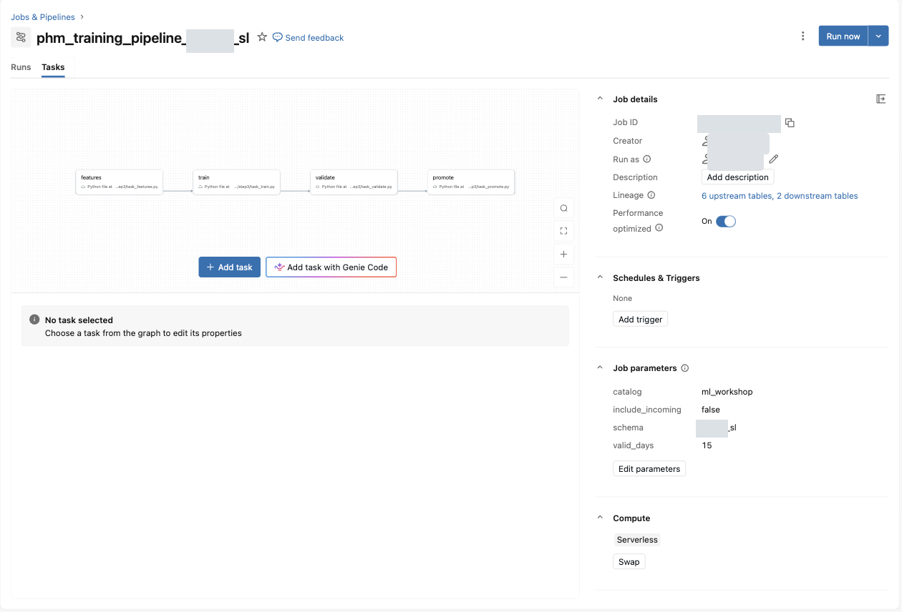
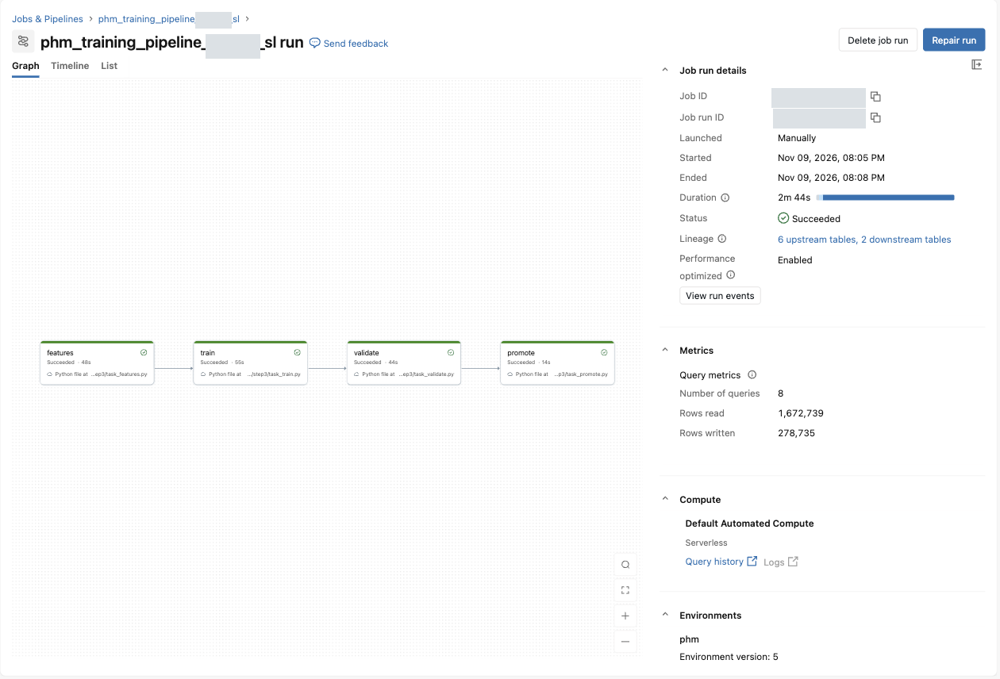

3) 학습 파이프라인 자동화¶
Step 1~2에서 노트북으로 한 일을 .py 파일 4개로 나눠, 순서대로 실행하는 Lakeflow Job으로 만듭니다. 다른 곳에서 이미 쓰고 있는 .py 학습 코드를 플랫폼에 올리는 방법과 같습니다.
| 태스크 | 파일 | 하는 일 |
|---|---|---|
1 features |
task_features.py |
원천 데이터로 피처 테이블 다시 만들기 (phm_features.py 재사용) |
2 train |
task_train.py |
Step 2에서 고른 설정으로 학습 → 새 버전 등록 → @challenger |
3 validate |
task_validate.py |
형식·최소 성능 확인, 같은 검증 구간에서 champion과 비교 → 결과를 버전 태그와 이력 테이블에 기록 |
4 promote |
task_promote.py |
검증 통과 시에만 @champion 이동 (이전 버전은 @previous로 보관) |
1단계 - Job 만들기¶
- 노트북
step3/3_create_pipeline_job을 열고 내 스키마를 입력합니다. Job 컴퓨트는serverless그대로 둡니다. - 모든 셀을 실행하면
Job ready: phm_training_pipeline_<내 스키마>와 링크가 출력됩니다.
2단계 - 실행하고 지켜보기¶
-
출력된 링크로 Job을 엽니다. Tasks 탭에서 태스크 4개가 화살표로 이어진 그래프를 확인합니다.

화면의 개인 및 환경 식별 정보는 가렸습니다.
-
오른쪽 위 Run now를 누릅니다. Runs 탭에서 태스크가 하나씩 초록색으로 바뀝니다(약 3~4분).

-
각 태스크를 눌러 Output의
[features][train][validate][promote]줄을 읽어 봅니다.
[features] mlops_edu_dev.<내 스키마>.phm_features: 185,785 rows, last_ts=2026-10-01 23:50:00, include_incoming=false
[train] ... v2 -> @challenger val_auc=0.940 (valid from 2026-09-17)
[validate] challenger v2 auc=0.940 vs champion v1 auc=0.940 -> FAILED (output_schema=ok, min_auc=ok, beats_champion=fail)
[promote] v2 not promoted (validation_status=failed); @champion unchanged
승격되지 않았습니다. 정상인가요?
네, 정상입니다. Step 2와 같은 데이터·같은 설정으로 학습했으니 champion보다 나아진 점이 없습니다. 검증 단계가 의미 없는 교체를 막는 것이 이 파이프라인의 핵심입니다. Step 5에서 새 데이터가 들어오면 결과가 달라집니다.
- Catalog →
phm_failure_model→ 새 버전을 엽니다.validation_status·validation_reason태그와@challenger별칭을 확인합니다. - SQL로 검증 이력을 봅니다:
SELECT * FROM mlops_edu_dev.<내 스키마>.model_validation_log
Genie Code로 해 보기 · 승격이 안 된 이유
Genie Code로 해 보기 · 태스크 추가 설계 (ML Engineer 심화)
코드 이해하기 (ML Engineer 심화)¶
| 포인트 | 설명 |
|---|---|
| 태스크 사이 전달 | 별도 저장소 없이 UC 모델의 별칭·버전 태그로 상태를 넘깁니다. 각 .py를 따로 실행해도 결과가 같습니다 |
| Job 파라미터 | catalog·schema·valid_days·include_incoming을 Job 수준에서 받아 태스크에 넘깁니다 |
| 컴퓨트 | 서버리스 환경 버전 5. MLflow·scikit-learn이 포함되어 추가 설치가 없습니다 |
| 롤백 | 승격할 때 이전 champion에 @previous를 붙여 둡니다. 레지스트리에서는 별칭만 옮기면 되고, 버전이 고정된 Serving 엔드포인트와 이미 내려받은 엣지 모델은 그 버전을 다시 반영합니다 |
승인이 필요하다면
promote 앞에 사람이 승인하는 단계를 둘 수 있습니다. 어디에 넣는지는 마무리의 승인 지점에 정리했습니다.
다음 (함께 보기)¶
- 3.1 번들로 선언하기: 같은 Job을
databricks.yml로 코드화하고 dev/staging/prod에 배포 - 3.3 Azure DevOps 연동: PR → 테스트 → 스테이징 → 승인 → 운영